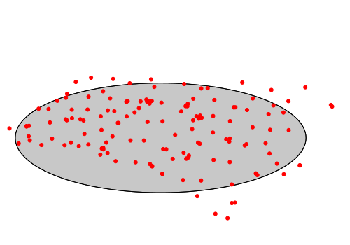

v.ellipse computes the best-fitting ellipse for input
vector map and creates new output vector map with
ellipse. Input vector data might be 2D points, lines, or areas.
 Fig: Fitting ellipse created with v.ellipse
The parameters of ellipse are printed on output if --verbose
flag is given.
EXAMPLE
Example of v.ellipse created around set of points (using data
points_of_interest, North Carolina sample data set). Ellipse is
is approximated by linestring with point distance 1 degree
(step).